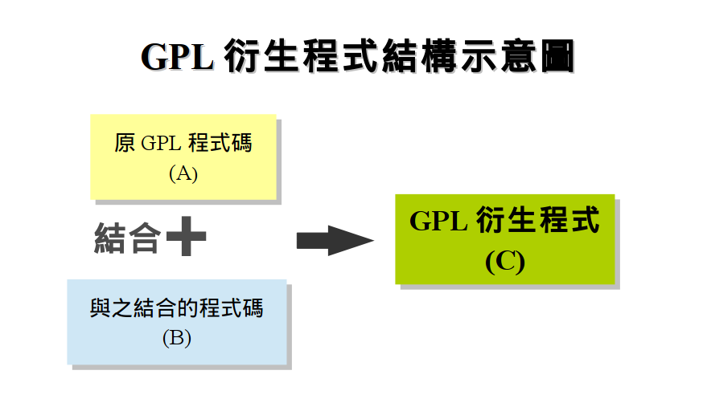
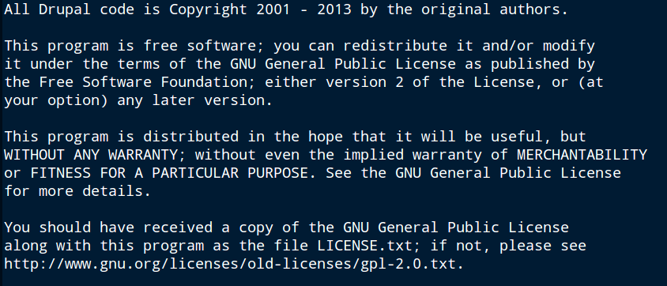

感謝您對「自由軟體鑄造場」的支持與愛護，十多年來「自由軟體鑄造場」受中央研究院支持，並在資訊科學研究所以及資訊科技創新研究中心執行，現已完成階段性的任務。 原網站預計持續維運至 2021年底，網站內容基本上不會再更動。本網站由 Denny Huang 備份封存。
也紀念我們永遠的朋友 李士傑先生（Shih-Chieh Ilya Li）。
也紀念我們永遠的朋友 李士傑先生（Shih-Chieh Ilya Li）。
GPL 與常見授權條款相容性淺析
建立日期 2014-01-28 11:34 最近更新在 2014-02-26 13:42
GPL 是被廣泛採用的自由開源授權條款，不過由於 GPL 具有授權拘束性，衍生程式必須仍然適用相同條款授權（註一），所以在利用上會需要注意與之結合的程式碼授權內容是否相容，因為與之結合的程式碼一旦成為 GPL 衍生程式，就代表著在散布時必須要透過 GPL 條款來授權散布，若是其原本的授權內容與 GPL 不相容，會讓使用者無法同時符合兩份條款的義務規定，進而可能發生侵權利用的狀況。因此本文將以 GPL-2.0 與 GPL-3.0 這兩份授權條款為中心，來說明目前常見授權條款是否與之相容，進而讓讀者了解哪些常見授權條款的程式碼可以與這兩份 GPL 條款的程式碼結合之後一起散布（註二）。

▲ 圖1：GPL 衍生程式結構示意圖。
【BSD 類程式碼大多可改採 GPL 授權散布】
BSD、MIT 與 Apache-2.0 這三份條款均屬於授權規定寬鬆的 BSD 類條款，但是由於各份條款的細部規定不同，因此僅 BSD、MIT 這兩份條款可以被相容於 GPL 條款中，改採 GPL 授權散布。
Apache-2.0 的相容狀況則會因 GPL 是二、三版而有所不同。因為 Apache-2.0 規定有專利反制與額外的被授權人擔保責任條款（註三），這些規定並不完全相容於 GPL-2.0，因此自由軟體基金會 (Free Software Foundation, FSF) 在草擬 GPL-3.0 時，也將這兩個因素納入考量，增加了可以讓 Apache-2.0 可以被相容於 GPL-3.0 的機制：一方面 GPL-3.0 增加了類似 Apache-2.0 的專利抑制條款規定，另外一方面，在第 7 條的附加條款裡，則是增加了可相容 Apache-2.0 被授權人額外擔保責任的附加條款。因此 Apache-2.0 的程式碼雖然無法改採 GPL-2.0 授權，但是透過 GPL-3.0 新增訂的條款，則可以改採 GPL-3.0 來授權散布（註四）。
【預設機制讓 MPL-2.0 程式碼可以同時適用 GPL 來授權散布】
MPL 系列條款由 Mozilla 基金會 (Mozilla Foundation) 所制定，其規定 MPL 的衍生檔案仍然必須適用 MPL 繼續授權，因此同樣是一份具有授權拘束性的條款，與 GPL 原則上並無法結合相容在同一個專案中。不過為了讓 MPL 可以與 GPL、LGPL 等條款相容，Mozilla 基金會在授權機制上做了調整，弱化 MPL-2.0 原本的授權拘束性。2012 年所發布的最新版 MPL-2.0，即是透過條款中的預設機制，讓 MPL-2.0 程式碼在與 GPL-2.0、LGPL-2.1 以及 AGPL-3.0 程式碼結合成為新程式散布時，該新程式可以額外地適用這三份條款來散布授權，這讓 MPL-2.0 程式碼可以額外地透過 GPL 來散布，而散布新程式的使用者除了必須遵守 GPL 的規定之外，還必須遵守 MPL-2.0 義務規定來散布原 MPL-2.0 程式碼。此外，不只這三份特定版本的條授權款適用 MPL-2.0 的這個預設機制，這三份條款之後的新版授權條款也同樣適用，因為未來若 FSF 發布 GPL-4.0 等更新版本條款，MPL-2.0 程式碼一樣有機會可以改採 GPL-4.0 授權。而 GPL-2.0、LGPL-2.1、AGPL-3.0以及這些條款的其後版本被統稱為「備位條款 (Secondary License)」）。不過程式的著作權人可以選擇排除 MPL-2.0 的這項預設機制，其只要在程式中附加一份 'Exhibit B - “Incompatible With Secondary Licenses” Notice' 的聲明，使用者就不能將 MPL-2.0 程式碼與備位條款程式碼結合散布，此時，MPL-2.0 程式碼也自然不能與 GPL 程式碼相結合來一起散布（註五）。
這樣的備位條款機制與雙重授權 (dual licesnsing) 看上去很相似，但是兩者略有不同：雙重授權是一個程式透過兩份不同的條款來授權，任何一位使用者都可以從中選擇適合的一份條款，來作為利用或再次散布該程式的授權條款，使用者沒有義務要同時遵守兩份條款的義務規定，但是讓 MPL-2.0 程式碼與備位條款程式碼結合成為新程式的使用者，其在散布這個新程式的時候，必須同時遵守兩份條款的義務規定，並沒有選擇的餘地，只有當這樣的新程式被散布到後手使用者的時候，後手才有權利可以選擇是否要將 MPL-2.0 的授權聲明從程式或檔案中排除，讓該檔案僅適用備用條款來授權散布。
另外要注意的是，即使有這樣的預設機制，這也僅讓 MPL-2.0 與備用條款可以相容於同一個更大型的專案程式中，由於「個別 MPL-2.0 檔」然仍然具有授權拘束性，無法與備位條款授權的程式碼相容並存在同一個檔案中，因此 MPL-2.0 程式碼的使用者，仍然不能將備用條款授權的程式碼寫入 MPL-2.0 檔案中，只有當後手使用者取得這個已經結合 MPL-2.0 與備位條款授權的專案時，這位後手因為有權利可以將 MPL-2.0 授權條款從新程式的檔案中排除，所以其可以開始將備位條款授權的程式碼寫入到最初適用 MPL-2.0 授權的檔案中。
【EPL-1.0 與 GPL 條款彼此互不相容】
EPL-1.0 也是具有授權拘束性的授權條款，原程式碼本身以及衍生程式均必須適用 EPL-1.0 授權，因此 EPL-1.0 程式碼無法改適用 GPL 授權。此外，由於沒有 MPL-2.0 的特別相容預設機制，所以也無法與 GPL 程式碼結合在同一個開發專案中相容並存。雖然 EPL-1.0 規定非衍生的獨立模組可以採用非 EPL-1.0 的條款授權（註六），不過當獨立模組採用 GPL 授權的時候，GPL 的授權拘束性仍然有很大的機率會擴散到其他 EPL-1.0 程式碼上，進而產生授權衝突。因此 EPL-1.0 與 GPL 條款間彼此互不相容。
【互不相容的 GPL-2.0 與 GPL-3.0 透過「及其後版本」機制來單向相容】
這兩份條款同為 GPL 系列的授權條款，因為兩者皆具有強烈的授權拘束性，規定衍生程式僅可以採用原條款授權，因此當 GPL-2.0 與 GPL-3.0 程式碼被結合或連結 (link & merge) 在一個大型專案中的時候，依照這兩份條款的規定，這個專案同時成為 GPL-2.0 程式與 GPL-3.0 程式的衍生程式，此時就產生的授權衝突的狀況。不過若是一個程式所採用的授權方式為「GPL-2.0 及其後版本 ("GPL version 2 or later versions", GPL-2.0+)」的話，表示開發者或權利人從一開始就允許使用者可以在後續的修改或散布過程中，將該程式改為授權內容不同、但是版本號更新的 GPL 版本來授權散布，此時，GPL-2.0+ 的程式碼就可以例外地與 GPL-3.0 程式碼結合在同一個專案中，然後採用 GPL-3.0 來散布整個專案。而透過「及其後版本」的授權機制，任何一個版本 GPL 授權的程式碼，都可以與更新版本的 GPL 程式碼相容在同一個專案中，然後採用更新版本 GPL 來一起授權散布（註一）。

▲ 圖2：Drupal-7.26 在 "COPYRIGHT.TXT" 純文字檔中宣告採用 GPL-2.0+ 模式授權。
【LGPL-2.1 程式碼可以單向改適用 GPL 來授權】
LGPL-2.1 是特別適用於函式庫的授權條款，與 GPL 一樣，也是為了達到四大自由所制定出來的，因此兩者本質相同，都具有授權拘束性，不過為了配合函式庫需要被廣泛利用的本質，所以 LGPL-2.1 的授權拘束性較 GPL 來得弱一些，使得 LGPL-2.1 函式庫在未被修改、直接呼叫利用的情況下，也可以無法提供源碼的軟體來加以利用。不過即使如此，由於 LGPL-2.1 與 GPL 均規定僅可以採用自身條款來授權衍生程式，所以原則上這兩份條款無法存在於同一個程式中。但是對於自由軟體 (Free Software) 理念者來說，因為 GPL 是更為貼近四大自由理念所制定出來的條款，因此在制定 LGPL-2.1 時加入了單向改採 GPL 的規定，讓使用者可以自由選擇是否要將 LGPL-2.1 函式庫改採 GPL 來授權，而一旦使用者決定之後，未來便不能再次更改回來，因此這個授權條款的改變是單向、不可逆轉的（註七）。
至於使用者所可以改採的 GPL 版本，依照 LGPL-2.1 的文意與 FSF 基金會的解釋內容來看，可以選擇 GPL-2.0 之後任何一個版本來改授權 LGPL-2.1 函式庫，包括 GPL-3.0 在內，也就是可以將 LGPL-2.1 條款直接改為採用 GPL-3.0 來授權（註八）。不過筆者以為這樣的文意解釋可能會在實際運用上產生問題，因為 GPL-3.0 與 LGPL-2.1 規定內容並不完全相同，例如 GPL-3.0 有明示的專利授權條款，LGPL-2.1 卻沒有明確的專利授權文字，由於專利授權在一般實務上均以明示的書面授權為準，因此在 LGPL-2.1 沒有明確授權文字的狀況下，一般的程式開發者或權利人極有可能是以「沒有將專利技術授權出去」的認知來為其函式庫採用 LGPL-2.1 授權，若是後續使用者將這樣的 LGPL-2.1 函式庫改為 GPL-3.0 授權散布的話，就與原開發者或權利人的意思相悖，因此筆者不完全認同 FSF 的見解。不過若是一個函式庫是採用 LGPL-2.1 及其後版本授權的話 (LGPL-2.1+)，由於開發者或權利人已經事先預見、並允許函式庫未來可以改採更新、但授權條件不同的條款來授權，因此使用者將 LGPL-2.1+ 函式庫直接改採用授權內容不完全相同的 GPL-3.0 來授權，可以算是在其可預知的範圍之內，因此是相對來說是比較不會產生糾紛的情況。所以筆者以為，在利用到僅標示 LGPL-2.1 授權的函式庫時，建議使用者先與原開發者或權利人取得聯絡、確認其原意之後，再決定是否改採用 GPL-3.0 或者更新的版本來授權，是比較不容易引發紛爭的作法。
【LGPL-3.0 程式碼可以單向改適用 GPL-3.0 】
LGP-3.0 跟 LGPL-2.1 一樣，有著讓使用者可以單向改變程式碼適用授權條款的規定，不過這部份規定的彈性範圍在 LGPL-3.0 較少，因為在沒有修改、單純散布 LGPL-3.0 函式庫的情況下，使用者並不能更改原函式庫的授權條款，只有在修改了函式庫的情況下，使用者才有權利主動為函式庫改適用 GPL-3.0 來授權。此外，使用者僅可以改適用 GPL-3.0 此一特定版本授權條款，而不能選擇其他版本的 GPL，因此即使未來 FSF 制訂了 GPL-4.0 或更新版本的 GPL，使用者也不能為 LGPL-3.0 程式碼直接改適用 GPL-4.0 或其後更新版本的來授權。
此外，LGPL-3.0 還規定了一個強制將 LGPL-2.1 函式庫轉換成為 GPL-3.0 授權的狀況：若使用者修改 LGPL-3.0 函式庫，使得修改後的函式庫受制於另外一個應用程式而無法正常運作的話，那麼這個修改後的 LGPL-3.0 函式庫就必須強制改適用 GPL-3.0 來授權。例如：使用者利用 LGPL-3.0 函式庫 F 來開發軟體 G，為了配合 G 的運作，使用者也對 F 進行了修改，成為函式庫 F'，而 F' 的正常運作必須依靠 G 所傳送的特殊指令，在缺少 G 的情況下 F' 大部份有意義的功能均無法運作，這樣的修改讓 LGPL-3.0 函式庫有機會受制於封閉源碼的應用程式，讓原本預設可以被他人持續自由利用的 LGPL-3.0 函式庫 F' 無法被自由利用，因此除非使用者修改 F' 與 G 間的互動方式，讓 F' 可以在沒有 G 的情況下仍然可以有意義的運作，否則依照 LGPL-3.0 的規定，函式庫 F' 必須強制改採用 GPL-3.0 來授權散布。這個強制轉換規定的意義在於，由於 G 有很高的機率會被認定為 GPL-3.0 函式庫的衍生程式，進而必須在散布時將 G 程式源碼一並提供給後手使用者，為了避免這樣的事情發生，使用者在修改函式庫時，就會避免採用那些會讓 LGPL-3.0 函式庫受制於封閉源碼程式的技術方法，進而維持 LGPL-3.0 函式庫的自由開放特性（註九）。
【AGPL-3.0 與 GPL-3.0 可相容共存於一個專案中】
AGPL-3.0 是修改自 GPL-3.0 而來的授權條款，其目的也同樣是在實踐四大自由的理念，只是 AGPL-3.0 強化了授權拘束性相關的規定，其修改後的衍生程式不僅仍然要繼續適用 AGPL-3.0 授權，當使用者透過網路提供衍生程式的應用服務時，也必須要將程式源碼也提供給予服務客戶。這樣的規定將網路提供程式服務的行為與散布程式的行為等化，造成都會啟動提供程式源碼義務的效果，擴張了授權拘束性的實際影響力。
由於 AGPL-3.0 與 GPL-3.0 都具有授權拘束性，因此原則上彼此是無法結合相容在同一個專案中的。不過這兩份條款的制定者 FSF 在草擬過程中，就考慮到了條款相容性的問題，所以分別在這兩份條款的第 13 條規定有額外的相容機制：當 AGPL-3.0 程式與 GPL-3.0 程式結合成為一個專案時，彼此仍然保持適用各自的授權條款，不會互相干擾，但是當整個專案透過網路提供應用服務的話，提供服務的使用者就必須依照 AGPL-3.0 的規定，將整體專案的程式源碼也提供給予應用服務客戶，此時，專案中原 GPL-3.0 授權部份的程式源碼，也因此必須要提供出來。透過這樣的機制，AGPL-3.0 與 GPL-3.0 兩份條款授權的程式碼因此相容在一個專案中，互不干擾。
【結語】
本文嘗試在單一文章中，分析常見自由開源授權條款與 GPL 的相容性，條款數量雖然不多，不過由於這些條款內容規定不同，因此細部分析狀況仍然頗為複雜，也可能有部份的組合狀況是本文沒有考慮到的，不過筆者期望透過本文，可以協助有需要的讀者初步了解這些授權條款之間的相容性，並且在討論上起拋磚引玉的效果。
----
註一：關於 GPL 授權拘束性的進一步說明，以及關於衍生程式範圍的說明，請參閱：林誠夏，GPL 條款對於衍生程式的判定標準與其授權拘束性的擴散範圍（上），https://www.openfoundry.org/tw/legal-column-list/8446-the-license-inheritance-bounds-of-gnu-gpl-01；林誠夏，GPL 條款對於衍生程式的判定標準與其授權拘束性的擴散範圍（下），https://www.openfoundry.org/tw/legal-column-list/8447-the-license-inheritance-bounds-of-gnu-gpl-02。
註二：本文以 "GPL" 來兼指 GPL-2.0 與 GPL-3.0 這兩個版本的 GPL 授權條款。
註三：關於專利反制條款與後面所提及的專利抑制條款，相關說明請參閱：葛冬梅，條文解析自由開源軟體的專利授權條款，https://www.openfoundry.org/tw/legal-column-list/8447-the-license-inheritance-bounds-of-gnu-gpl-02。而這邊所謂「額外的被授權人擔保責任」，是指 Apache-2.0 第 9 條後半段的內容，其規定使用者在散布程式的同時，可以自行提供擔保或保證給予取得程式的後手，但是必須自行承擔該擔保或保證的責任，而在這些擔保或保證內容造成其他程式開發者或使用者被告或有所損失的狀況下，該位使用者必須要為其他開發者與使用者辯護與賠償其損失，相關說明請參見：葛冬梅，自由開源軟體預設的不附隨保證與擔保特性，https://www.openfoundry.org/tw/legal-column-list/9146-accompanied-character-of-foss-no-warranty-and-limitation-of-liability-。
註四：單從授權條款的規定來看，Apache-2.0 是否可以被相容於 GPL-2.0，是個有討論空間的議題，因此 Apache Software Foundation (ASF) 對於這個議題的看法其實是傾向於，Apache-2.0 可以被相容於 GPL-2.0 中，所以 ASF 雖然接受 FSF 對於 Apache-2.0 與 GPL-2.0 相容性的見解，但是並不完全認同其理由與背後的理念，這樣的觀點可以從 ASF 的官方聲明中可以看得出來，請參見右列網頁聲明第 5 段文字：https://www.apache.org/licenses/GPL-compatibility.html。
註五：相關規定請見 MPL-2.0 的第 1.5、1.12、2.4、3.3 與 10.4 條內容。詳細的條款說明請參 Mozilla Foundation 的頁面：https://www.mozilla.org/MPL/2.0/combining-mpl-and-gpl.html。
註六：相關規定請見 EPL-1.0 的第 3 條。
註七：LGPL 對於四大自由的實踐程度較低，相關的說明內容與制定理由請參見 LGPL-2.1 前言的說明。而關於單向轉換的規定，請見 LGPL-2.1 第 3 條。
註八：FSF 這樣的觀點可以從其對於 LGPL-2.1 的評註內容，以及對於所有 GNU 授權條款彼此相容性的分析清楚看得出來。FSF 對 LGPL-2.1 的評註請見：https://www.gnu.org/licenses/license-list.html#LGPLv2.1；而其對於所有 GNU 授權條款相容性分析的內容請見：https://www.gnu.org/licenses/gpl-faq.html#AllCompatibility。
註九：LGPL-3.0 與 GPL-3.0 的相容跟轉換相關的規定請見 LGPL-3.0 第 2 條。而關於 LGPL-3.0 的進一步介紹，請參閱：林誠夏，更為彈性中庸的 LGPL-3.0，https://www.openfoundry.org/tw/legal-column-list/1166--lgpl3。
自由軟體鑄造場電子報 : 第 235 期 行動裝置的除蟲技術概論─第一部
標籤: GPL, BSD, MIT, Apache-2.0, MPL-2.0, EPL-1.0, LGPL-2.1, LGPL-3.0, GPL-2.0, GPL-3.0, AGPL-3.0, compatibility,
分類: 法律專欄
專欄總覽


自由軟體鑄造場 製作 最佳瀏覽狀態：IE7或Firefox2.0以上 (建議使用Firefox) ‧ 解析度1024*768
E-Mail：contact@openfoundry.org Address：台北市南港區研究院路2段128號 中央研究院資訊科學研究所 . 隱私權條款. 使用條款
E-Mail：contact@openfoundry.org Address：台北市南港區研究院路2段128號 中央研究院資訊科學研究所 . 隱私權條款. 使用條款